UB Tools with Natrolite Data#
This tutorial demonstrates how to use the UB tools in NeuXtalViz to process CORELLI Natrolite data (chemical formula \(Na_2Al_2Si_3O_{10}\cdot 2H_2O\)).
Step 1: Convert to Q#
In the Convert to Q tab:
Set the instrument to CORELLI.
Enter the IPTS and run numbers for the Natrolite dataset.
Set the wavelength range and select the appropriate calibration file.
Click Convert to Q to load the data and build the Q volume.
{kind=link}
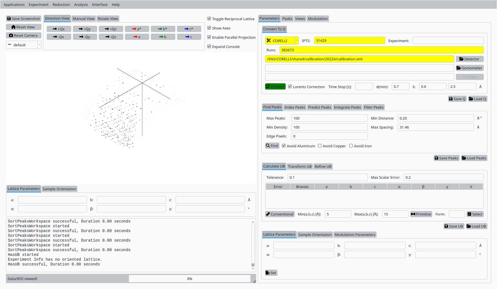
Convert Natrolite data to Q for CORELLI.#
Step 2: Add reference peaks#
In the Inspect / Verify tab:
- Use the horizontal, vertical, and diffraction controls to define a
region of interest in the detector view.
- Set the coordinates for the first reference reflection and click
Add Peak to record it.
{kind=link}
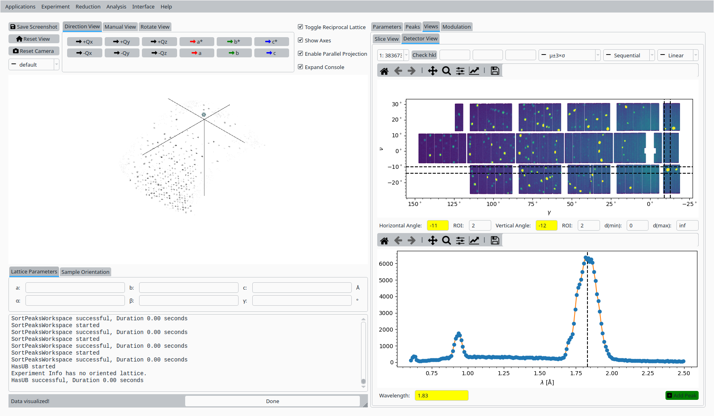
First reference peak for Natrolite on CORELLI.#
- Adjust the ROI and diffraction coordinate for a second reflection
and click Add Peak again.
{kind=link}
Second reference peak for Natrolite on CORELLI.#
Step 3: Set initial UB from unit cell#
Back in the UB tools interface:
- Enter approximate lattice parameters for Natrolite (a, b, c and
angles \(\alpha\), \(\beta\), \(\gamma\)).
- Click Set UB to construct an initial UB matrix from these
lattice parameters and the reference peaks.
{kind=link}
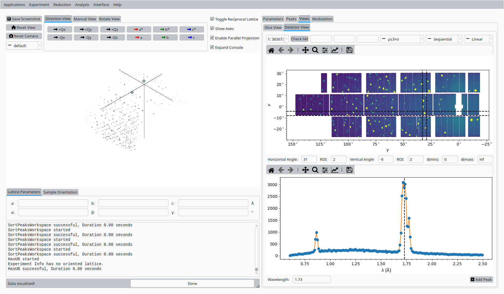
Initial UB matrix based on the Natrolite unit cell.#
Step 4: Hand index reference peaks#
In the Peaks tab:
Select the first reference peak in the table.
Enter its expected (h, k, l) values in the hand-indexing fields.
- Use the helper controls to copy the integer indices and calculate
the predicted peak position.
{kind=link}
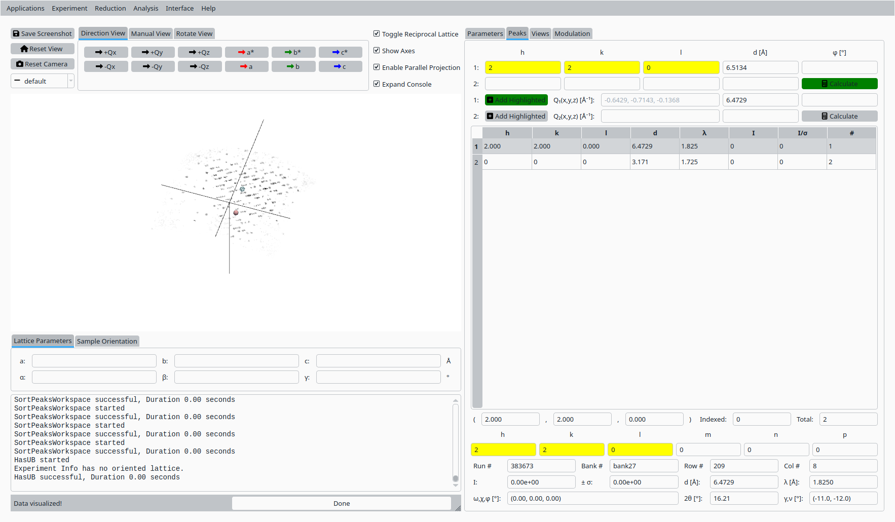
Hand indexing the first Natrolite peak.#
- Select the second reference peak and repeat the hand-indexing
procedure for its (h, k, l) values.
{kind=link}
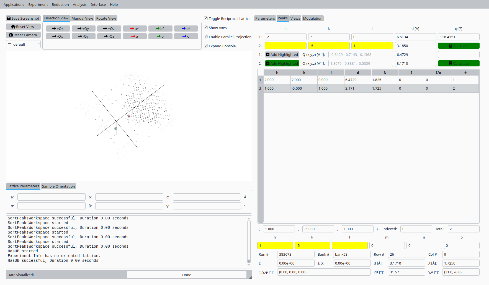
Hand indexing the second Natrolite peak.#
Step 5: Refine UB matrix (constrained)#
Back in the UB tab:
- Choose an optimization mode such as Constrained that reflects
the expected symmetry.
- Click Refine UB to refine the UB matrix using the indexed
reference peaks.
{kind=link}
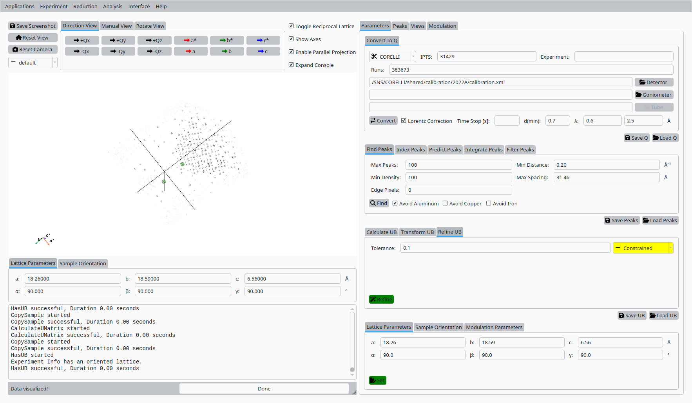
Refined UB matrix for Natrolite on CORELLI (constrained).#
Step 6: Index peaks#
In the Peaks tab:
Switch to the indexing sub-tab if needed.
- Click Index Peaks to apply the refined UB matrix to the peak
list and assign Miller indices.
{kind=link}
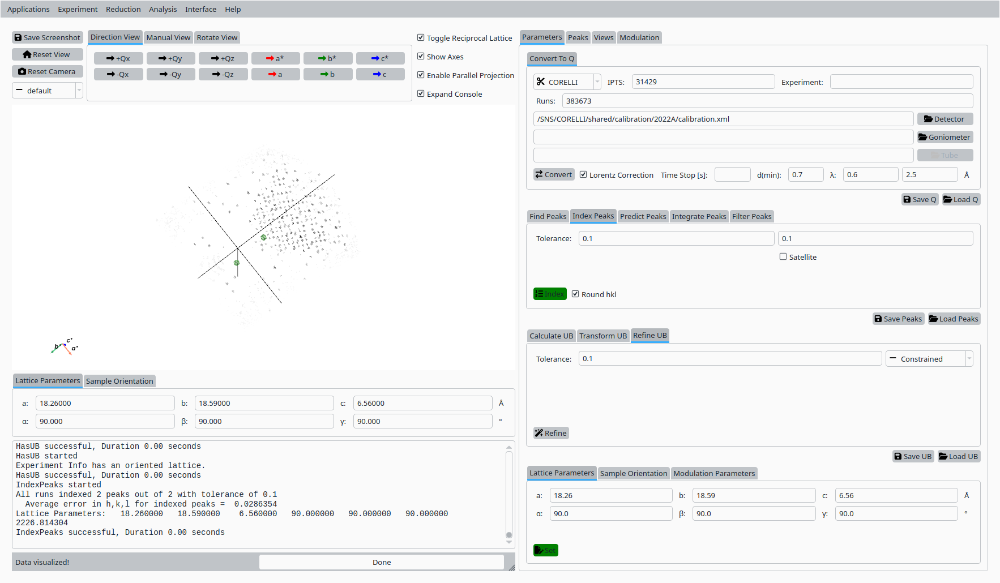
Automatic indexing of Natrolite peaks.#
Step 7: Predict, integrate, and filter peaks#
In the Analyze Peaks workflow:
- Use the Predict Peaks controls to propose additional peaks
based on the current UB matrix and centering.
{kind=link}
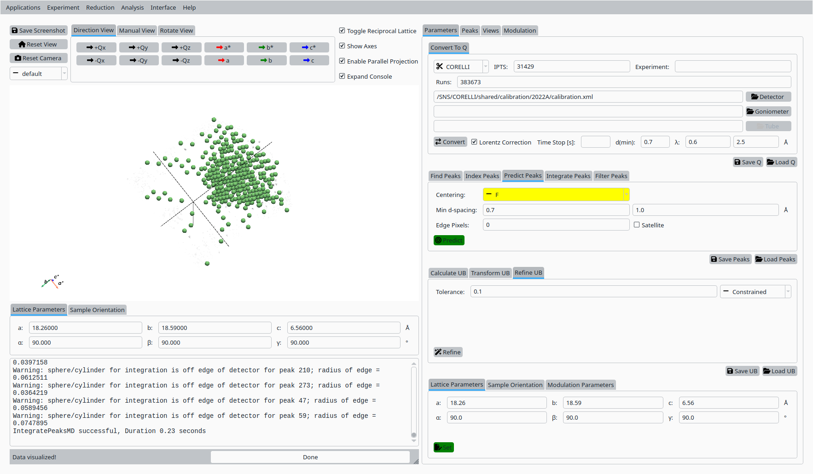
Predicted Natrolite peaks based on the refined UB.#
- Enable adaptive and centroid options as needed and click
Integrate Peaks to integrate the predicted peaks.
{kind=link}
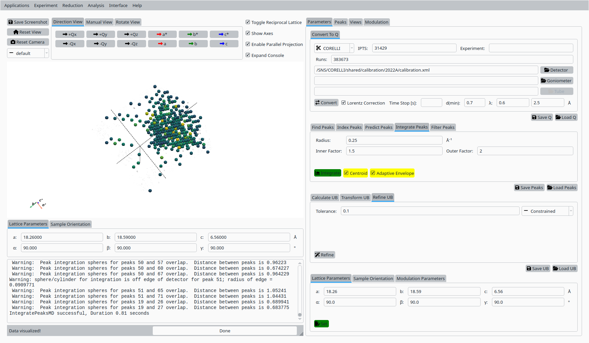
Integrated Natrolite peaks.#
- Apply a filter on peak intensity or signal-to-noise using the
Filter Peaks controls to refine the working peak list.
{kind=link}
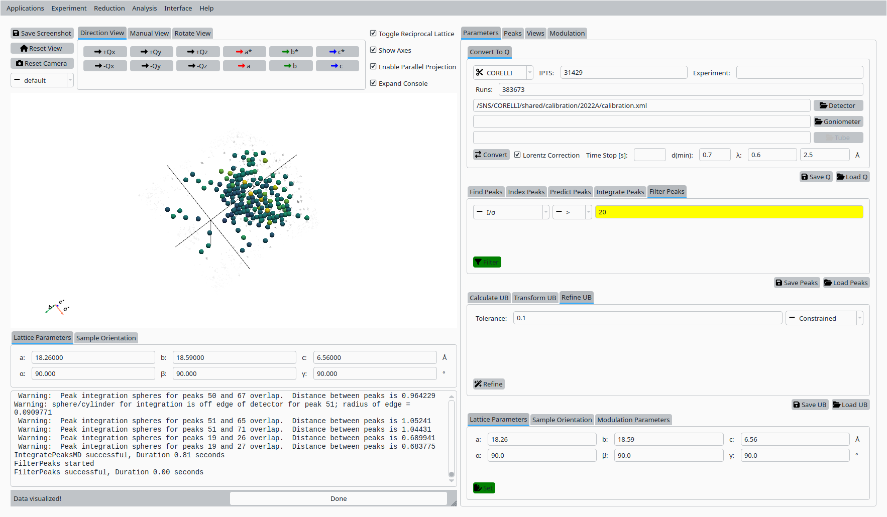
Filtered Natrolite peak list.#
Step 8: Refine UB matrix (orthorhombic)#
Return to the UB tab:
- Change the optimization mode to Orthorhombic (or another
appropriate symmetry).
- Click Refine UB again to update the UB matrix using the
filtered, integrated peaks.
{kind=link}
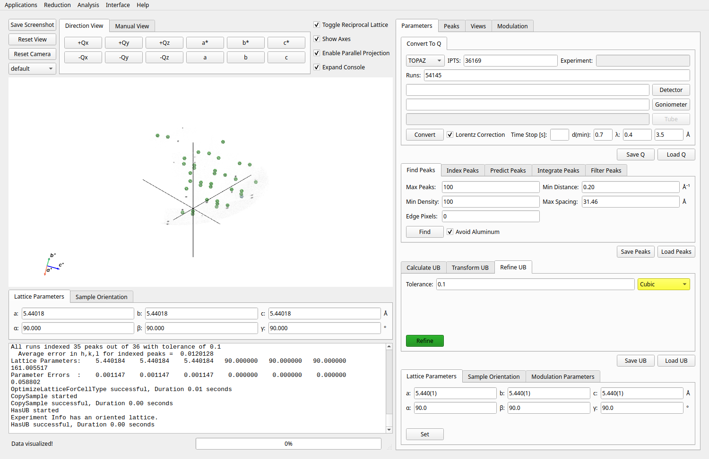
Final UB refinement for Natrolite on CORELLI.#
Step 9: View indexed peaks#
In the Peaks tab:
Select a peak from the table to highlight it in the Q-space view.
- Inspect the indexing, Q position, and fit quality for the
selected reflection.
{kind=link}
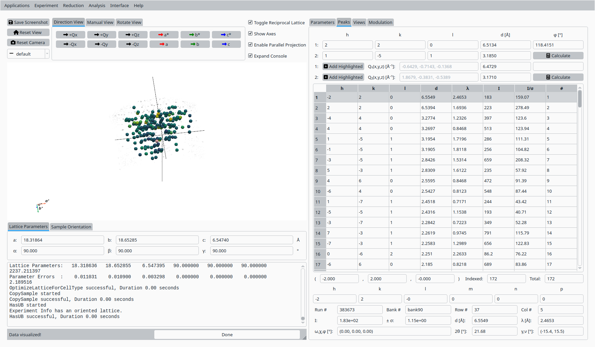
View and inspect an indexed Natrolite peak.#
Step 10: Slice view#
In the Convert to HKL tab:
Choose a slice direction and coordinate.
- Click Convert to HKL to generate a reciprocal-space slice
based on the refined UB matrix.
{kind=link}
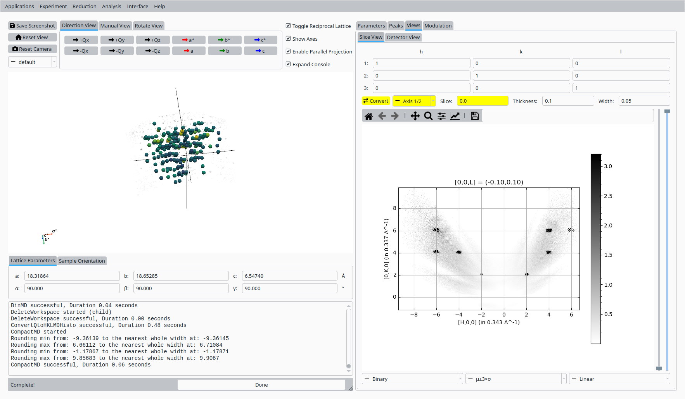
HKL slice view for the refined Natrolite UB.#
Step 11: Save UB#
Back in the Convert to Q tab:
- Click Save UB to write the refined UB matrix to disk for use in
subsequent CORELLI Natrolite analysis.
{kind=link}
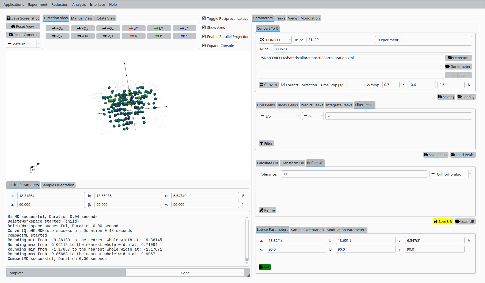
Save the refined UB matrix for Natrolite.#